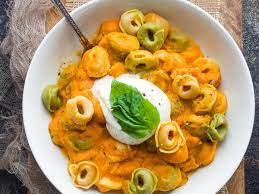

Tortellini ala Vodka
Tortellini ala Vodka

What are Tortellini?
Tortellini are pasta originally from the Italian region of Emilia (in particular Bologna and Modena). Traditionally they are stuffed with a mix of meat (pork loin, raw prosciutto, mortadella), Parmigiano Reggiano cheese, egg and nutmeg and served in capon broth (in brodo di cappone).
Ingredients
For this recipe, we are going to use three cheese tortellini that you can buy from your local grocery store in the frozen section.
- Frozen Three Cheese Tortellini
- Your choice of Vodka Sauce
- Fresh Basil
- 1 Garlic Clove
- 1tbsp Kosher Sea Salt
- Grated Parmesan Cheese
How to make Tortellini ala Vodka!
- Boil a large pot with roughly 3 quarts of water
- Take your basil one leaf at a time, roll it tightly horizontally and cut it perpendicular to the length. This method is referred to as Chiffonade.
- Take your garlic clove and mince it, to create 1 Tablespoon of minced garlic
- Once a rolling boil has begun, add your Kosher Salt and the Tortellinis
- After about 3 minutes, or whenever the Tortellini are all floating at the surface, remove from heat and strain
- While still hot, add the Vodka sauce, Chiffonade Basil and Minced Garlic to the strained tortellinis and stir to combine
- Plate finished Tortellini ala Vodka, add Parmesan cheese to your liking as well as an optional sprig of Basil for garnish
Congratulations and enjoy your Tortellini ala Vodka!
Back to Home!